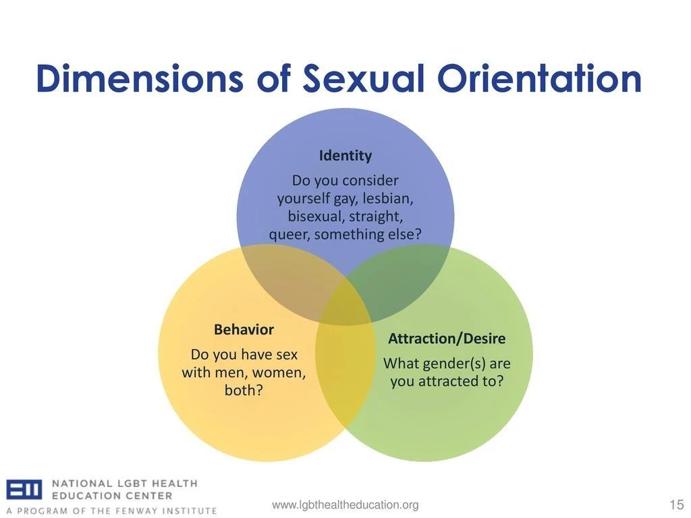
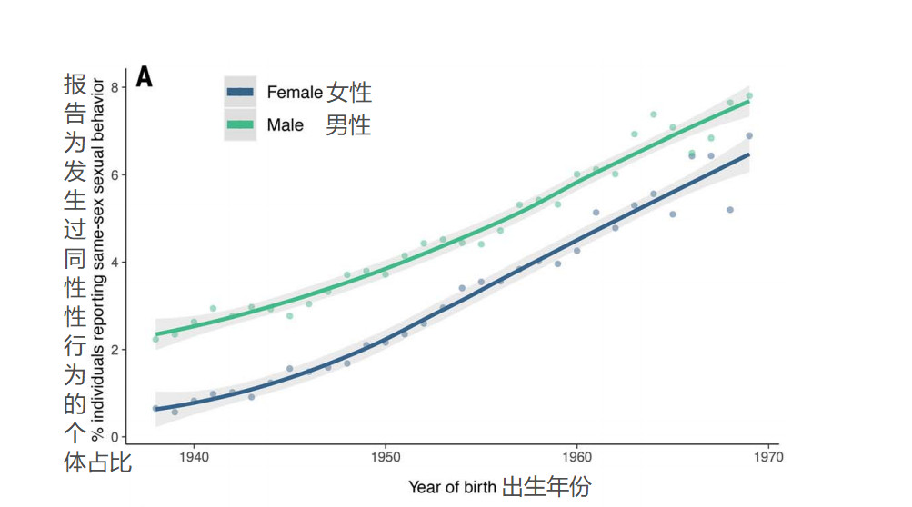

同声传译 | “同性恋基因科学”的科学性·续篇
以下我将对研究方法进行详细论述。全基因组关联分析非常简单：科学家从一个标准目录入手，该目录包含了数以百万计因人而异的基因组位点【1】，这些位点被称为单核苷酸多态性（SNP）。【2】
译注1：位点是指基因在染色体中的位置。
译注2：Ganna等人的本次研究是一项由美国麻省理工学院Broad研究所、哈佛大学和剑桥大学联合开展的医学和人类基因组项目。研究人员首先对来自英国的生物银行数据库（408995人）和美国的23andMe数据库（68527人）进行统计分类，将至少发生过一次同性性行为的人群称为“非异性恋者”，其他称为“异性恋者”。接着，ta们对其中477,522个“非异性恋”个体进行了全基因组关联分析。
研究人员对每一位点进行分别的统计检验以查看其是否与某些主要目标相关联，并通过极高的置信度水平（confidence level）【1】来减少误报数量。这是一种纯探索性或“描述性”的研究方法，旨在以大海捞针般的方式寻找关联性。因为研究人员控制了样本量和置信度水平，所以ta们可以确保这项研究至少具有统计学意义。随着样本量的增加，置信度水平也依据匹配度而随之变化。【2】（Ganna等人告诉我们，旧的研究未能通过下述新标准：P <5×10-8，但ta们忽略了当下的研究也可能无法通过未来的标准。）
译注1：置信度水平是指构造总体参数的多个样本区间中，包含总体参数的区间占总数之比，一般用1-α表示；而置信区间是指在某一置信水平下，样本统计值与总体参数值间误差范围。置信区间越大，置信水平越高。
译注2：一般而言，样本量越大，置信度水平必然越高。
由于Ganna等人没有预先决定ta们期望哪一组SNP变得显著，所以任何一组SNP都可以拿来发文章。全基因组关联分析的因果关系或证实性结论从统计学的角度看来是没有切实依据的。然而，由于许多人坚持认为基因决定一切，遗传相关性通常被解释为因果关系。在记者和大众中，这种解释尤为普遍。但是，基因和文化都具有很强的遗传性，因此要弄清它们的影响并非易事。
Ganna等人发现了2个显著的SNP，并试图在其他较小的数据集中重复这一发现。其中之一得到了重复。Ta们进一步按生理性别划分了样本（ta们排除了所有跨性别者和双性恋者），并重复了该过程：2个新的SNP只在男性中十分显著、1个新的SNP只在女性中十分显著。那2个单独针对男性的SNP得到了重复检验，而单独针对女性的SNP则没有。此步骤是证实性的——研究者在进行重复检验时已经有了目标基因组，但此步骤并不具有因果关系（不过仍具有相关性）。这些测试的证实性价值是有限的。首先，ta们的主要数据——8-25％的行为差异据称可以通过遗传学解释——依赖于所有的SNP，包括那些没有重复的SNP和一开始就不显著的SNP。那些可以重复的、显著的SNP占比小于1%。其次，研究样本仅限于欧洲血统的人。从欧洲血统样本创建的多基因评分（Polygenic score）通常不会在其他组中重复【1】。此种情形下，上述发现要么是虚假的，要么在不同的人类血统群体中存在着不同的针对异性恋的遗传机制——这是令人难以置信的。独立的加性相关性的大规模测试也与在大多数遗传学研究中占主流的复杂交互研究几乎没有相似之处，这就好像不用大锅，反倒用一把漏勺去研究女巫的汤剂。
译注1：多基因评分（Polygenic score）也被称为多基因风险评分分析（Polygenic risk score），是一个用来评估个体患某种疾病风险的方法，它是通过GWAS统计数据的基因型效应值来计算的。
这些遗传标记（即SNP）与什么相关？Ganna等人称ta们的标准为“非异性恋”【1】，但这实际上只是对是否曾经有过同性性行为的自我报告。研究性学的人通常会衡量三个维度：身份认同，欲望和行为，所有这些维度都会为我们在“谁是同性恋”等问题上提供非常不同的答案。身份认同和行为是明显不同的。最近的一系列社会学研究以有过同性性行为的异性恋为对象，并冠之以诸如《不是同志》、《兄弟性爱》【2】和《直女接吻》之类的标题。
译注1：为简明表述，Ganna等人的研究将曾经发生至少 1 次同性性行为的人群称为非异性恋者（nonheterosexuals），研究中的性别均为个体的生理性别（sex）。
译注2：加州大学河滨分校Jane Ward在其于2015年出版的Not Gay: Sex Between Straight White Men中探索了 “直人同性性行为”的各种亚文化，受访的白人男性将同性性行为视作增进关系和建立男子气概的方式，它让彼此之间更像“兄弟”。在西北大学博士后Tony Silva的论文中，受试者对同性性行为进行了非传统的解释，ta们认为这种同性间的性行为是为了帮助好友“解决困难”，且这种性行为是不带性吸引的。详见：Bud-Sex: Constructing Normative Masculinity Among Rural Straight Men That Have Sex With Men (2017)，及Bud-Sex, Dude-Sex, and Heteroflexible Men (2018)。
简而言之，和男人发生一次性关系并没有使我变成同性恋，18岁前没有与同伴发生性关系也没有使我变成直男（Ganna研究团队可能会如此暗示）或者是无性恋者（正如我的行为所暗示的）。行为和欲望的区别也是明显的，一如针对性侵犯和强奸、针对性工作（此种的动机可能是经济性的）、针对无性恋者性行为的研究所阐明的。更重要的是，我们知道人们在生命历程中会经历性流动（Sexual Fluidity）【1】和性行为的变化。
译注1：性流动是性取向或性认同的一种或多种变化。推荐阅读Lisa M. Diamond的专著：Sexual Fluidity: Understanding Women's Love and Desire. (Harvard UP, 2009).
Ganna等人做了补充分析（第六页上中的一段），以检验其关于一次或多次同性性行为的发现是否适用于那些会定期发生、或是只发生同性性行为的人。Ta们认为，对于发生更为频繁或只发生同性性行为的人，部分遗传效应（genetic effects）是不同的，“这些遗传效应区分开了（只发生）异性性行为与（任何）同性性行为”（6）。即：ta们认为发生一次或多次同性性行为与基因之间的关系并不能解释那些通常被认为属于女同性恋、男同性恋以及双性恋的行为。关于那些使人们发生频繁的、或只发生同性性行为的相关性，ta们没有给出任何信息，亦没有提到是否任一SNP是显著的或者是可以重复的——尽管这对ta们准备回答的问题是一项更好的检验标准。作者还表明受访者自我报告的性别身份认同、性欲望以及性行为的具有相关性，但ta们却没有提供对性别身份认同或性欲望的遗传关系分析。


关于性取向的自我报告同样存在其他问题。Ganna等人的图1A（上图）显示出生年份和自我报告的同性性行为之间存在着显著关系。1960年代后期出生的人报告此行为的可能性是1930年代出生的人的4-6倍。也许有一个强烈的进化选择偏向于同性恋的性行为（queer sex）。希望如此。但是作者们还表明，在同一时期，同性性行为与儿童数量呈负相关，这导致了进化悖论。同性性行为的流行和兴起不能通过遗传来解释（有人想知道为什么这种见解没有使研究结束……）。从根本上来讲，这是一种文化的现象。【1】（针对同性性行为）的污名和法律已经得到了可观的缓解和放松，这增加了后来者尝试和/或报告同性性行为的意愿。异性恋及其各种其他变体这些现象在历史上较为短暂、在文化上较为特定。作为身份认同和组织行为的方式，它们远非普遍或永恒的。在其他时期和地点，同性和异性性行为都已被制度化、仪式化、被禁止和忽略。人们已经将这些性行为视为人类固有的双性恋倾向，是生命历程的自然阶段，而与“性”本身无关。通过生物学和遗传学来解释这些文化现象是很愚蠢的：“同性恋”的存在时间还不够长，而且其变异（fluctuation）过于频繁，以至于无法参与基因进化。这样的研究能够告诉我们的只有极少的有关人类性行为的知识。
译注1：作者Lockhart认为同性性行为是一种文化现象，因此生物学依据无法、也不应该被用来解释同性性行为。
杰夫 · 洛克哈特（Jeff Lockhart）是密歇根大学的社会学博士研究生。他的论文探讨了意识形态在科学辩论——特别是在生物学和社会研究的交叉领域——结构中的作用。
翻译 by 云声 校译 by 小林 排版 by Ray